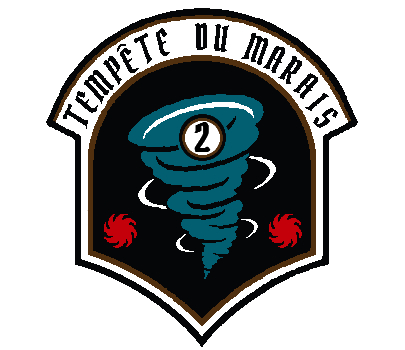
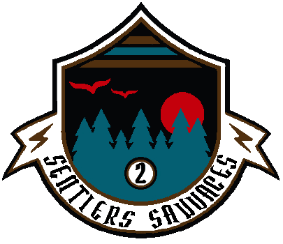
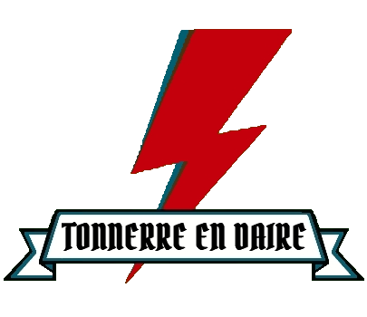
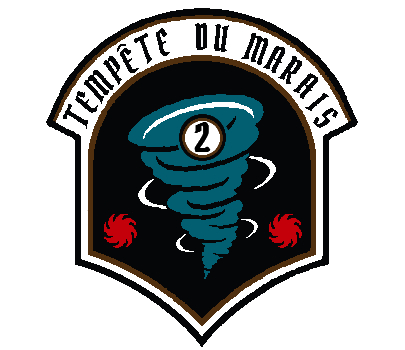
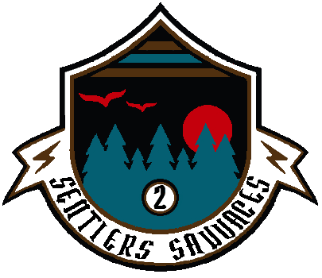
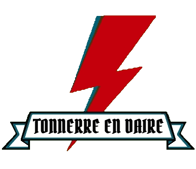

Les Insurgés
des déchets


Les Insurgés
des déchets


Prochaine action
Participation au World Cleanup Day
Événement en préparation, bientôt toutes les informations !
Lieu : À définir
Date : 18/09/2021
Horaire : À définir
Ramasser et trier les déchets : nos précédentes actions collectives
Chaque année, l’équivalent de 8,7 tours Eiffel de déchets serait jeté illégalement dans la nature en France. Ces détritus sont une source de pollution et ils coûtent une fortune aux communes concernées, qui sont dans l’obligation de les traiter. Du sac poubelle à la véritable casse à ciel ouvert, la taille des sites répertoriés par notre association ou indiqués par des riverains est évaluée avant toute intervention en concertation avec les pouvoirs publics afin d’organiser des opérations de nettoyage ciblées.
 





Objectif : Nettoyer une décharge sauvage
Lieu : Saint-Just-Luzac (17320) / Abords de la D18
Date : 01/03/2021
Effectif : 13
Durée : 3 heures
Bilan : 20m2 d'une déchetterie sauvage dont 1 tonne et demi de déchets (gravats, bâches plastiques bidons de peinture, solvants, seaux...), 200 kg de bouteilles en verre, 170 canettes, des bouteilles en plastique par dizaines, 20 pneus, 2 transats, 1 tv, 1 amphore géante, 1 ordinateur, 1 chaîne hi-fi avec les enceintes svp ! Des peluches ! Des vêtements, de la nourriture, 1 faisan mort et emballé ! 1 oiseau et 1 crâne de ragondin
Mission accomplie
Objectif : Nettoyer une zone de marais
Lieu : Marennes (17320) / Badauge
Date : 22/03/2021
Effectif : 16
Durée : 6.5 heures
Bilan : 5 m3 de déchets => 2 pneus, 4 vieilles tables d’ostréiculteurs (ferraille), 1 fauteuil, 1 transat, 2 animaux morts dans des sacs 🥺🤢😱, énormément de micro-déchets en plastique, du polystyrène, des coupelles d’ostréiculture et poches, des bouchons, des pailles, ficelles, fils en plastique...
Mission accomplie
Objectif : Nettoyer une zone côtière
Lieu : Plage et forêt du phare de la Coubre
Date : 28/03/2021
Effectif : 10
Durée : 4 heures
Bilan : 11 sacs de 50 litres et un pneu, énormément de petits plastiques éparpillés sur une grande surface avec une quarantaine de bouteilles, beaucoup de verre dans la forêt et dans le blockhaus, environ une trentaine de bouteilles.
Mission accomplie
Objectif : Nettoyer les bois et les cours d'eau
Lieu : Saint-Just-Luzac (17320) / Abords de la D728
Date : 04/04/2021
Effectif : 14
Durée : 6 heures
Bilan : 7m3 de déchets récoltés, 1 remorque pleine de déchets, 1000 clous, 31 pneus, 45 canettes, 185 boites de conserves, 1 Tv, des vêtements, 300 kgs de bouteilles en verre, du grillage, 1 friteuse, des sacs d’aliments, un bateau gonflable, des poches à huîtres, des plaques d'amiante, de goudrons, des ruches etc etc etc...
Mission accomplie
Objectif : Nettoyer un ruisseau encombré de déchets
Lieu : Bourcefranc-Le Chapus (17560) / Cagouillac
Date : 07/04/2021
Effectif : 22
Durée : 6 heures
Bilan : 4 m3 de déchets divers plastiques - 2 pneus - 200 bouteilles en verre - 100 cartouches de chasse - 30 canettes en fer déjà désagrégées ! - 1 friteuse - 1 meuble - 1 plaque en tôle - 4 sacs de poubelle ménagère - 1 paire de bottes - 1 soutien gorge - Un pantalon(Mais personne dedans, ouf ! )
Mission accomplie
Objectif : Ramassage sur un site ostréicole
Lieu : Bourcefranc-Le Chapus (17560)
Date : 14/04/2021
Effectif : 5
Durée : 5 heures
Bilan : 522 bouteilles de verres (sans compter celles cassées), des canettes (2 sacs jaunes), 1 siège de camion d'un autre temps, 1 crâne de chat 🐈 😱, 1 bidon avec de l'huile de vidange usagée ☠️, de la ferraille, etc etc...
Mission accomplie
Objectif : Nettoyer une décharge sauvage dans un marais
Lieu : Bourcefranc-Le Chapus (17560) / Rue de Chatain
Date : 25/04/2021
Effectif : 24
Durée : 8 heures
Bilan : 4 tonnes de déchets - 12 m3 - Carrelage - Gravats - Tuiles - Plaque d'Amiante - Blocs Siporex - Parpaings - Ferraille - 1 portail - 1 énorme grillage - 1 brise vue - 20 canettes - 10 bouteilles en verre - 10 Bidons (huile et produits dangereux ont été déversés !) - 3 fusées de détresse - 80 Chambres à air - 1 arbre de Noel avec ses boules ! - 1 assise de chaise - 1 sac à dos - Des bottes - Des pots de fleurs en plastique et en terre cuite - 1 manteau - 1 bidet - 1 robinet - 1 évier - 1 flexible d’aspirateur - 1 pédale de machine à coudre - 2 lustres - 1 perceuse - 1 parabole - 1 pot d’échappement - De la Vaisselle - 3 casseroles - 5 Batteries de voiture - Des nappes en plastique - Des bâches en plastique - Des couches culottes - Des poubelles ménagères - 50 poches à huîtres - 25 canettes en plastique - 20 paniers en ferraille - 1 jarretière !
Mission accomplie
Objectif : Nettoyer les bois et les cours d'eau
Lieu : Hiers Marennes/Nodes
Date : 03/05/2021
Effectif : 12
Durée : 7 heures
Bilan : 800 kilos de déchets dont 150 bouteilles en verre, 50 canettes, 150 kgs de tout venant, 4 bouteilles plastique remplies d’urine 🤩, du carrelage, 1 téléphone fixe, 1 enjoliveur, des chaussures de bébé 👶🏻 (vides 😉), 1 cuissarde mono jambiste, 1 manteau, 1 emballage de suppositoires, 1 emballage de préservatifs, 1 Canapé, 2 transats, 1 reste de parasol, 1 tancarville, 1 tapis, des nappes, de la moquette, 1 trottinette, 1 poussette, des canisses, 1 siège auto, de la pâte à modeler, 1 « débrou » puis 1 « ssailleuse »(car en 2 morceaux 🤪), 1 tente ⛺️, des bâches, des sacs poubelles d’ordures ménagères, de la ferraille, des jouets en plastique (brouette, cuisine), des cartouches de chasse, 1 Ballon de basket, 1 dinosaure 🦕 (en plastique !)
Mission accomplie
Objectif : Rendre une ville plus propre et sensibiliser
Lieu : Bourcefranc-le-Chapus (centre ville, plage, pistes cyclables)
Date : 05/06/2021
Effectif : 24
Durée : 4 heures
Bilan : environ 500 kilos - 1513 mégots (soit 756 500 litres d’eau qui ne seront pas pollués !) - 47 masques - 105 bouteilles en verre - 61 bouteilles en plastique - 133 canettes (pour l’association caritative K Net Partage ) - 1 sac de 100 litres de polystyrène - 1 pneu - 400 kilos de tout venant - 2 tuyaux en PVC- 1 bidon de 20 litres de térébenthine - 1 panneau rigolo - 2 poêles - 1 mandoline neuve de cuisine - 1 assiette - 1 couteau !
Mission accomplie

Objectif : Nettoyer un site ostréicole
Lieu : Bourcefranc-le-Chapus (site de Daire)
Date : 04/07/2021
Effectif : 25
Durée : 5 heures
Bilan : - 209 bouteilles de verre - 60 bouteilles plastiques - 4 m3 de tout venant - 80 canettes en fer pour l’association @knetpartage - 1 gros bidon en plastique avec une bonne odeur 🤪 - 6 Pneus - 10 masques - 1 siège de bureau - 1 trottinette enfant - 1 vélo adulte (apparemment jeté la veille dans une claire parce que c’est rigolo !🙄🤔) - 1 antenne tv - Des poches à huître enterrées - 5 paniers en plastique - Des chambres à air - 10 kg de Ferraille. Tout a été évidemment trié, rangé… sous les averses de pluie 🌧 et nous avons vaincu les éléments !
Mission accomplie


Agir au quotidien de manière individuelle
Notre association prône le ramassage de déchets comme une action de groupe collective, conviviale et partagée.
Mais chacun de nous oeuvre au quotidien pour tenter de réduire l'impact sur la planète que peut engendrer la négligence de certains.
C’est une « activité » addictive comme pour un sportif qui a besoin d’aller à la salle de sport régulièrement.
Que vous ramassiez un masque sur le chemin de l’école de vos enfants, un mégot au pied de votre immeuble ou un ticket de caisse devant le centre commercial, chaque action est importante et chaque geste compte...
L'art du Clean Walk
Une clean-walk, comme son nom l’indique en anglais, est une marche de nettoyage. Le but de cette action est de ramasser les déchets laissés par nos concitoyen(nes). Il suffit d'une paire de gants en latex (ou de jardinage, pour ne pas avoir à les jeter après), de sacs poubelles, de préférence de tri. Si vous en avez la capacité, vous pouvez aussi prendre des perches de collecte des déchets.
Niveau de difficulté
Initiez-vous au plogging
Le plogging ou parfois écojogging est une activité de nettoyage citoyen qui se décrit comme une combinaison de jogging et de ramassage de déchets. Le terme suédois plogging est formé de la contraction de plocka upp (« ramasser ») et de jogging.
L'épreuve ultime, c'est le ploggathon ! Toutes les informations ici .
Niveau de difficulté

Crédits photos : Delphine Basset, Carole Genty, Wikipédia